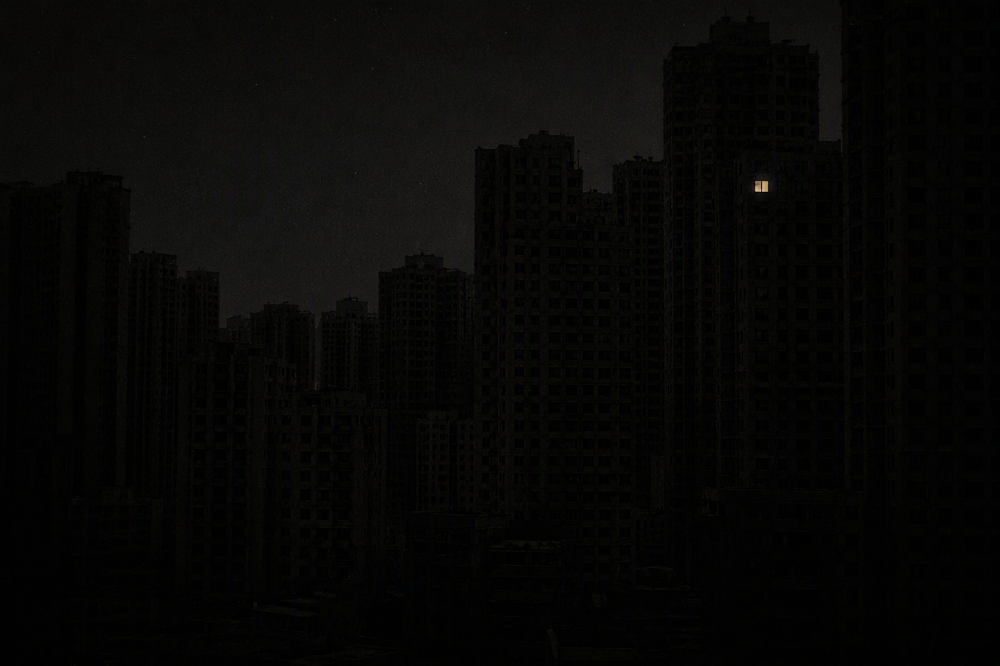

信号来源：备用电源 · 全城断电中
电来了。发射机的红灯亮起来的那一刻，夜莺推开导播间的窗，对着话筒说："往外看。"
全城都是黑的。楼是黑的，街是黑的，河也是黑的——只有一扇窗，亮着。
"导播间望出去，正好能看见。"她说，"告诉我，那扇窗，在第几格。"

写下那扇亮窗的格子（列字母 + 行号）。
■ 本期已收听
D2。夜莺在稿纸上记下这个格子，笔停了很久。
"停电那晚，全城只有那一扇窗有电。"她说，"供电局说不可能。可它亮着——一直亮到节目结束，我念出'晚安'的那一刻，它灭了。"
"下一期，对着镜子说话。家里有镜子的，先盖住。"
你翻过这盘母带——背面的针尖刻字旁边，有一小块灯油烧过的痕迹。
十二个字里的第六个
那扇窗里坐着多少人，你数过吗
← 返回往期节目